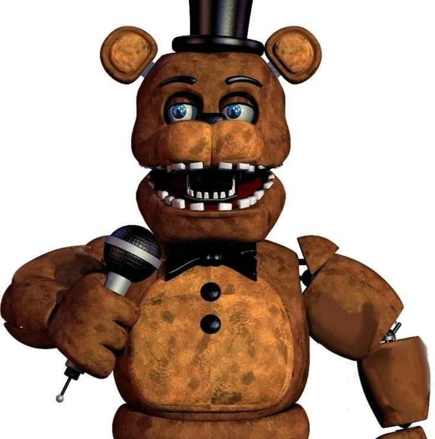
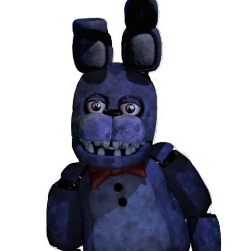
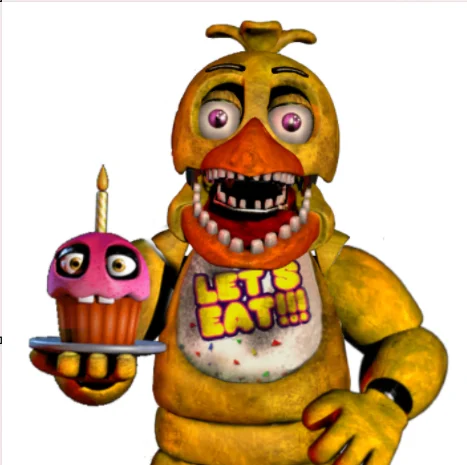
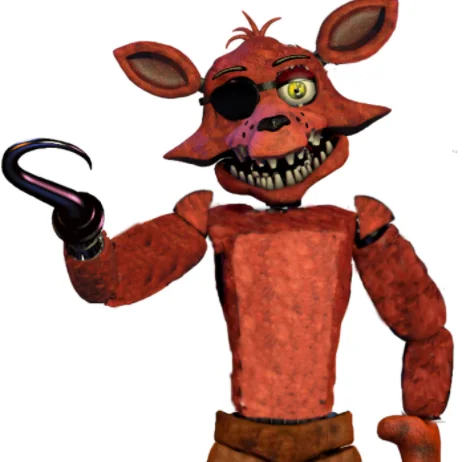

Com o encerramento das atividades da Family Diner, a Fazbear Entertainment deu o seu maior salto comercial em 1985. A inauguração do primeiro grande restaurante da Freddy Fazbear's Pizza expandiu a nossa visão: saímos de uma modesta lanchonete para um verdadeiro templo do entretenimento, recheado de arcades, salas de festas temáticas e uma cozinha de alta produção.
Freddy Fazbear's Pizza (1985)
Onde o quarteto clássico nasceu e conquistou gerações.
A Banda Principal
Pela primeira vez na história, aposentamos a dupla e apresentamos ao mundo o quarteto de mascotes que se tornaria o maior ícone da cultura pop infantil da época:

Freddy Fazbear
O vocalista principal e líder da banda. Com sua cartola elegante e microfone, garantia que todas as festas de aniversário tivessem um parabéns inesquecível.

Bonnie
O guitarrista do grupo. Com seu tom roxo vibrante e solos energéticos no palco principal, era o favorito das crianças apaixonadas por música.

Chica
A embaixadora do sabor e backing vocal! Sempre acompanhada do seu fiel Cupcake, Chica trazia alegria e o amor incondicional por pizza.

Foxy
O destemido raposo pirata residente da Pirate Cove. Contava histórias de aventura no alto-mar e encantava os pequenos exploradores.
A Revolução do Endoesqueleto Robótico
Em 1985, a Fazbear Entertainment deu um passo definitivo para a segurança e modernização do nosso show. Os complexos trajes híbridos foram oficialmente descontinuados para dar lugar ao sistema de **Endoesqueletos Robóticos Dedicados (Série Endo-01)**.
"Quatro personagens independentes operando via sincronização pneumática e circuitos de áudio integrados."
Esses novos robôs eram 100% autônomos no palco. Movidos por componentes pneumáticos e programados com sequências de movimentos computadorizados, eles podiam se apresentar por horas sem a necessidade de operadores humanos dentro dos trajes, garantindo um show consistente e seguro para toda a família.
Transição de Unidade
A unidade de 1985 foi o maior sucesso de público da nossa história inicial. No entanto, o volume de visitantes superou todas as expectativas operacionais do prédio original.
Para atender às novas normas corporativas e reestruturar nosso modelo de negócios para expansões futuras, o prédio original de 1985 teve suas atividades encerradas anos depois, permitindo que a marca redirecionasse seus recursos para novos locais franqueados e modelos de entretenimento mais compactos.
A magia de 1985 pavimentou o caminho para que a Fazbear Entertainment se tornasse o império global que você celebra hoje no Mega Pizzaplex!